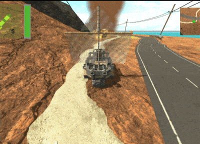

The Thrill of the Wheel
Released on March 25th, 2023
The thrill of the wheel is a car-based arena game inspired by Vigilante 8 and Twisted metal. It was developed between october 23rd of 2022 and released on march 25th of 2023. this was my first full 3D project, as such I determined i would give it more time than my other projects.
My Contributions:
- Project Lead.
- Art Direction: I modelled the island and created around 50% of the 3d assets. Also created all the ui.
- Core Game Programming: Movement, Weapon implementation, UI implementation, scene management, and audio programming
My learnings and things to improve:
- This project was my first doing 3D, figuring out the movement scripts for a car was quite complex and it took a significant part of the time i hoped to use developing other things. I had expected the 3D to be significantly harder than doing 2D but that was not the case and it was a relief.
- I hoped to create a more distinctive identity for each of the cars but time forced me to cut a lot of features from it
- Better enemy AI